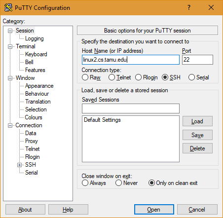
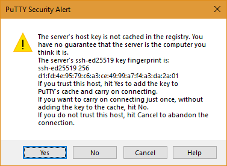
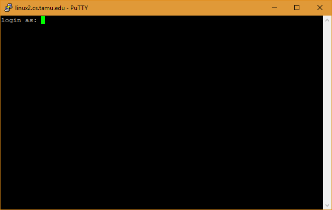
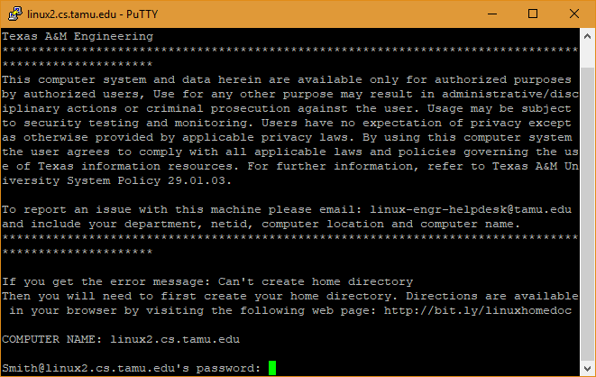

PuTTY is a free SSH client on Windows. The download page is https://www.chiark.greenend.org.uk/~sgtatham/putty/latest.html
You can download an installer or a portable version
Run putty.exe you installed and enter linux2.cs.tamu.edu or other servers you would like to connect.
Keep other settings as default.
Click "Open".
When the security alert popped, click "Yes" to add the server to trusted list.
When prompted for login:, enter your netid.
Then your password. Notice there won't be asterisks showed for your password.
Once you successfully logged in, you get a bash shell.
Try something fun from a linux guide.